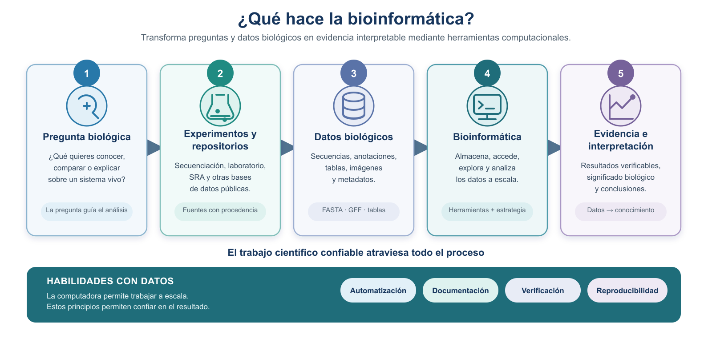
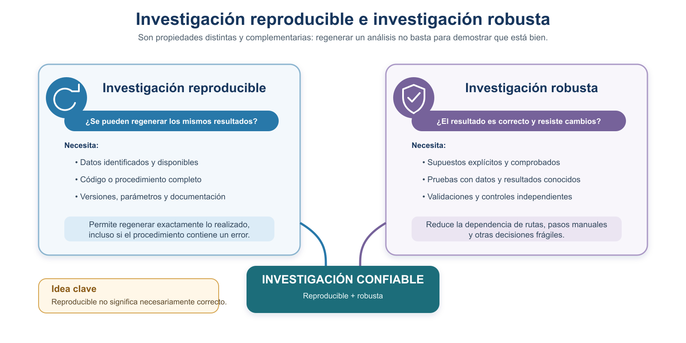
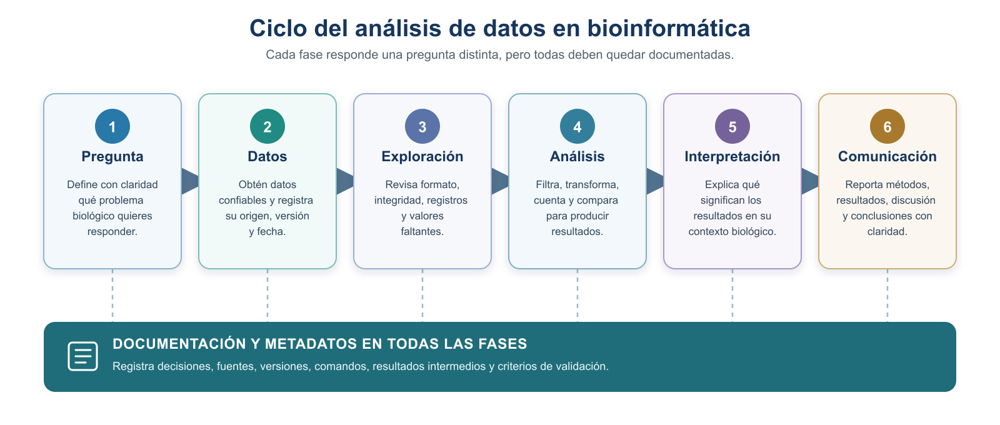
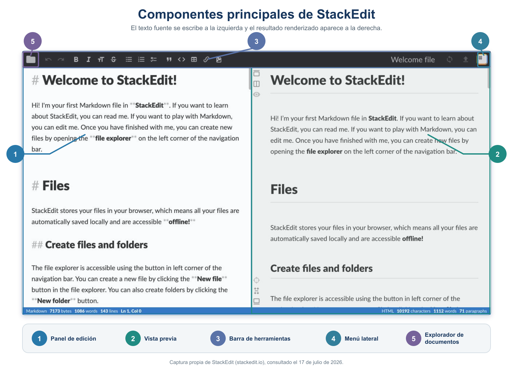

S1 — Documentar: Markdown y las fases del análisis de datos
Esta es la primera sesión del curso, así que aquí no hay lectura previa que traer hecha: el material se lee junto con la sesión y las dos prácticas se completan después. A partir de S2 el orden será el habitual —leer antes, practicar en el taller, corregir después—.
Primer módulo de la Unidad 1. Antes de tocar un solo dato biológico hay que responder algo más básico: qué distingue un análisis del que uno puede fiarse de otro que simplemente produjo un número. Hoy defines esa diferencia, aprendes a escribir de modo que otra persona pueda seguirte, y abres el documento que crecerá durante todo el semestre.
Ficha del módulo
| Elemento | Descripción |
|---|---|
| Sesión | S1 (2 h) |
| Tema | Documentar: Markdown y las fases del análisis de datos |
| Competencia | A — Trabajo reproducible y comunicación científica |
| Resultado (plan) | Documenta reportes y protocolos con Markdown; comprende las fases del análisis de datos |
| Lectura base | Este módulo + Buffalo (2015), cap. 1 |
| Caso conductor | Convertir una pregunta biológica en una estrategia escrita y comunicable |
| Evidencia | Tarea 1: protocolo.md iniciado (pregunta, subpreguntas, estrategia) + reporte de lectura del cap. 1. Bitácora de IA abierta |
| Ajuste integrado | [Nuevo] inicio del eje de reproducibilidad del curso |
Crea tu carpeta de trabajo en tu computadora local antes de empezar las prácticas. La estructura completa del proyecto se construye en S2; hoy basta con crear una carpeta llamada introbionfo y dentro una carpeta llamada doc/.
Relación con lo anterior
Es la primera sesión: no hay nada anterior que recuperar. Lo que sí hay es una idea que conviene desmontar de entrada —que la bioinformática consiste en ejecutar programas—. El resto del curso se apoya en lo contrario: las preguntas biológicas permanecen; las estrategias de análisis evolucionan.
Resultados de aprendizaje
Al terminar S1, el estudiante es capaz de:
- Explicar qué es la bioinformática y por qué exige habilidades con datos.
- Distinguir reproducibilidad, replicabilidad, verificación y validación, y usar cada término con precisión.
- Describir las fases del manejo y análisis de datos, y las de resolución de un problema bioinformático, y explicar cómo se complementan.
- Convertir una pregunta biológica en subpreguntas y en una estrategia escrita, sin empezar por la herramienta.
- Escribir en Markdown un documento legible y funcional, con encabezados, listas, tablas, código y enlaces.
- Iniciar
protocolo.mdcomo documento vivo y abrir la bitácora de IA.
Ruta de S1
| Momento | Qué hacer | Tiempo estimado |
|---|---|---|
| En la sesión | Presentación del curso; leer §1–§3; primeras decisiones sobre tu pregunta | 120 min |
| Después | §4 y §5: redactar el protocolo inicial y el reporte de lectura (Prácticas 1 y 2) | 100–120 min |
| Antes de S2 | Leer S2 completa y traer el primer intento de su Práctica 1 | 45–60 min |
1. La bioinformática, las habilidades con datos y la reproducibilidad
1.1 ¿Qué es la bioinformática y por qué necesitas habilidades con datos?
Hace algunas décadas, determinar los elementos genéticos de un genoma requería miles de experimentos a lo largo de muchos años. Por ejemplo, la información sobre la regulación de la expresión de genes en Escherichia coli —recopilada en la base de datos RegulonDB— proviene de varios miles de publicaciones experimentales. Hoy las tecnologías de secuenciación han cambiado el panorama: la cantidad de datos biológicos generados cada día es masiva y crece de forma acelerada (Buffalo, 2015). El repositorio de secuencias SRA del NCBI, por citar un caso, ha crecido de manera exponencial en la última década.
La bioinformática es la disciplina que aplica herramientas computacionales para almacenar, acceder y analizar esa avalancha de datos biológicos. La única forma práctica de trabajar con tantos datos es a través de la computadora, automatizando tareas para ahorrar tiempo y reducir errores.

Figura 1. Qué hace la bioinformática: transforma una pregunta y datos biológicos en evidencia interpretable mediante herramientas computacionales. Las habilidades con datos y el trabajo confiable atraviesan todo el proceso.
Aprender bioinformática no es memorizar programas, sino desarrollar habilidades con datos: “la capacidad de improvisar rápidamente una forma de ver conjuntos de datos complejos, usando un conjunto conocido de herramientas” (Buffalo, 2015). Se aprende como lo hace un bioinformático: probando cosas con datos en la computadora y comprendiendo sus resultados.
1.2 Cuando descuidamos el trabajo: dos casos reales
Tener habilidades técnicas no basta: hay que trabajar con cuidado, de forma verificable y reproducible. Dos casos famosos muestran qué ocurre cuando esto falla.
Un problema de descuido. El caso de las células STAP (2014): un resultado presentado como un descubrimiento histórico resultó no reproducible, en medio de descuido y falta de rigor. El episodio terminó en retractaciones y en un enorme costo humano y científico (The Guardian, 2015; Japan Times, 2024).
Un problema de software. Un grupo tuvo que retractar cinco artículos cuando se descubrió que un error en su programa invertía el signo de dos columnas de datos, produciendo estructuras de proteínas equivocadas. No hubo mala fe: fue un error de software no detectado (Miller, 2006, Science).
“Non-reproducible single occurrences are of no significance to science” (Karl Popper, The Logic of Scientific Discovery, 1959). Un resultado que ocurre una sola vez y no puede regenerarse no aporta a la ciencia. Por eso el trabajo reproducible y verificado es parte del método, no un trámite.
1.3 Cómo se ve el trabajo bien hecho
Frente a esos ejemplos de lo que no hay que hacer, conviene ver uno de lo que sí. Un buen proyecto bioinformático se reconoce porque:
- Registra el origen, versión e integridad de cada dato (metadatos).
- Conserva los datos originales intactos y genera los derivados aparte.
- Documenta cada comando y lo asocia a la subpregunta que responde.
- Verifica los resultados intermedios y valida que respondan la pregunta.
- Interpreta biológicamente los resultados y cierra con una conclusión sustentada.
- Permite que otra persona regenere todo el análisis.
Un ejemplo publicado de estas buenas prácticas es el trabajo Reproducible RNA-seq analysis using recount2 (Collado-Torres et al., 2017, Nature Biotechnology). Sus autores no se limitaron a publicar resultados: pusieron a disposición de la comunidad los datos ya procesados de más de 70 000 muestras de RNA-seq provenientes del repositorio público SRA, junto con un paquete de software documentado (recount) para consultarlos, descargarlos y analizarlos, y material reproducible que permite rehacer los análisis paso a paso. En otras palabras, cualquier persona puede regenerar y reutilizar su trabajo: justo lo contrario de los dos casos anteriores.
Leonardo Collado-Torres, uno de los autores de recount2, imparte el módulo de transcriptómica en Bioinformática y Estadística II, más adelante en tu formación. El estilo de trabajo reproducible que empiezas a aprender aquí es el mismo que verás en la investigación real.
A menor escala, el reporte ejemplos/ReporteGenomeEcoli_Formato_v2.md muestra ese mismo cuidado aplicado al genoma de E. coli: plantea preguntas, registra la procedencia de los datos, documenta los comandos, muestra los resultados y los interpreta. Tenlo como referencia de la calidad que construiremos durante el semestre.
1.4 ¿Por qué la reproducibilidad?
Imagina que dentro de un año un revisor te pide rehacer el análisis de tu tesis, o que un compañero quiere partir de tu trabajo. Si no puedes regenerar los mismos resultados a partir de los mismos datos y procedimientos, tu trabajo no es verificable. En ciencia, un resultado que no puede regenerarse tiene poco valor.
1.5 Cuatro conceptos que usaremos con precisión
La terminología varía entre disciplinas; estas son las definiciones que este curso utilizará de forma consistente. Evitamos la palabra ambigua “repetir”.
- Reproducibilidad. Otra persona puede regenerar los resultados usando los mismos datos, procedimientos, comandos y herramientas documentados. Ejemplo: entregas tu genoma, tu protocolo y tus comandos, y tu compañera obtiene el mismo conteo.
- Replicabilidad. Se obtiene evidencia compatible mediante un estudio o conjunto de datos independiente. Ejemplo: otro grupo analiza una cepa distinta de E. coli y llega a una conclusión similar.
- Verificación. Se comprueba que archivos, comandos, operaciones y resultados intermedios funcionan como se esperaba. Ejemplo: confirmas que un archivo se descargó completo comparando su checksum (una “huella digital” del archivo: un código que cambia si el archivo se altera).
- Validación. Se demuestra que el procedimiento y la evidencia realmente permiten responder la pregunta biológica. Ejemplo: verificas que contar líneas de tipo “gene” en el GFF sí corresponde a “número de genes”.
- Robustez. Se comprueba que la conclusión no depende de decisiones frágiles, errores silenciosos ni de una única comprobación insuficiente. Ejemplo: obtienes el mismo conteo por dos caminos distintos.

Figura 2. Reproducible no es lo mismo que robusto: un análisis puede regenerarse exactamente y aun así estar equivocado. La investigación confiable es a la vez reproducible y robusta.
(Buffalo, 2015, Cap. 1): nunca confíes ciegamente en tus herramientas ni en tus datos. Verifica todo —supuestos, formatos, resultados intermedios—, porque los conjuntos de datos son enormes y un error silencioso puede propagarse sin que lo notes. Verificación, validación y robustez son la Regla de Oro convertida en acciones.
Estos cuatro principios no son solo teoría: aparecerán como acciones observables dentro de cada práctica, y se retomarán progresivamente en las siguientes unidades y en el proyecto integrador.
2. Dos procesos complementarios
Trabajar con datos implica dos procesos que se relacionan pero no son equivalentes. Distinguirlos evita confundir “mover datos de un lado a otro” con “responder una pregunta”.

Figura 3. El ciclo del análisis de datos. Cada fase responde una pregunta distinta, pero la documentación y los metadatos acompañan a todas.
A. Fases del manejo y análisis de datos
Describen el ciclo de vida de los datos:
- Obtención. Descargar los datos de una fuente confiable.
- Registro de procedencia. Anotar de dónde vienen, su versión y su integridad (metadatos).
- Exploración. Revisar formato, tamaño, campos y posibles problemas.
- Limpieza o transformación. Preparar los datos generando archivos nuevos (no sobre el original).
- Análisis. Filtrar, contar, comparar para producir evidencia.
- Conservación. Resguardar los datos originales intactos y los derivados por separado.
- Documentación y comunicación. Registrar y reportar todo de forma reproducible.
El cómo hacer bien estas fases se reparte en el resto de la unidad: los principios FAIR que las guían se ven enseguida; la ficha de metadatos de cada dato, en la sección 4; y la organización del proyecto, en la sección 6.
B. Fases de resolución de un problema bioinformático
Describen cómo se razona para responder una pregunta:
- Delimitar la pregunta biológica.
- Descomponerla en subpreguntas.
- Definir la evidencia necesaria para cada subpregunta.
- Identificar los datos requeridos.
- Examinar el formato y los campos disponibles.
- Diseñar la estrategia antes de elegir comandos.
- Traducir la estrategia en operaciones computacionales.
- Seleccionar y ejecutar comandos.
- Probar primero con un caso pequeño.
- Verificar los resultados.
- Interpretar cada respuesta.
- Integrar una conclusión.
Cómo se complementan
El proceso B es el mapa del razonamiento: decide qué preguntar, qué evidencia buscar y cómo interpretarla. El proceso A es el manejo cuidadoso de los datos: ocurre dentro de B, sobre todo cuando B llega a la parte de conseguir y trabajar los datos. Dicho de otro modo, B te dice qué datos necesitas y para qué; A te dice cómo obtenerlos, resguardarlos y transformarlos de forma confiable.
La siguiente tabla muestra dónde cae cada fase del manejo de datos (A) dentro de la resolución del problema (B):
| Fase del manejo de datos (A) | ¿Dónde ocurre dentro de la resolución (B)? |
|---|---|
| Obtención | Paso B4 (identificar los datos) → se descargan los datos elegidos |
| Registro de procedencia | Pasos B4–B5 (al identificar y examinar los datos) |
| Exploración | Paso B5 (examinar el formato y los campos disponibles) |
| Limpieza o transformación | Pasos B6–B7 (diseñar la estrategia y traducirla en operaciones) |
| Análisis | Pasos B8–B10 (ejecutar, probar en pequeño y verificar) |
| Conservación | Atraviesa B: resguardar el original y guardar los derivados aparte |
| Documentación y comunicación | Atraviesa todo B: se registra en cada paso y culmina en B12 (conclusión) |
El proceso B organiza el razonamiento y el proceso A cuida los datos: A no es un proceso paralelo, sino el manejo de datos que se ejecuta dentro de B. Primero razonas qué necesitas (B); en el momento de tocar los datos, lo haces con cuidado (A). No son lo mismo, pero se encajan uno dentro del otro.
Estas dos secciones que siguen desarrollan lo que acabamos de ver: la sección 3 pone en práctica el proceso B con un ejemplo concreto, y la sección 4 muestra cómo todo ese razonamiento se registra en un documento —el protocolo—. Son las dos caras de una misma moneda: razonar el problema (sección 3) y documentarlo de forma reproducible (sección 4).
3. De la pregunta biológica a una solución computacional
Esta sección aplica el proceso B de la sección 2 (cómo se razona un problema), recorriendo sus pasos sobre un ejemplo. La idea central es la misma: no se empieza eligiendo comandos. Se empieza por la pregunta, luego se define qué evidencia la responde, qué datos la contienen y, al final, qué herramienta la obtiene.
El orden correcto es pregunta → evidencia → datos → operación → herramienta. Empezar por el comando es la causa más común de análisis que “corren” pero no responden nada.
A lo largo del curso trabajarás con varios conjuntos de datos —el genoma de E. coli, sRNAs, datos de ratón y una red de regulación, entre otros—. Aquí ilustramos el proceso con uno de ellos, pero el mismo razonamiento (pasos B1–B12 de la sección 2) se aplica a todos.
El siguiente diagrama resume los pasos que recorreremos:
flowchart TD
P[B1-B2 · Pregunta y subpreguntas] --> E[B3 · Evidencia necesaria]
E --> D[B4-B5 · Datos y su formato]
D --> Est[B6-B7 · Estrategia y operaciones]
Est --> H[B8-B9 · Herramienta y prueba pequeña]
H --> V[B10 · Verificación]
V --> I[B11 · Interpretación]
I --> C[B12 · Conclusión integrada]El proceso B aplicado a un ejemplo
Para ilustrarlo usamos el genoma de la bacteria E. coli K-12 y su archivo de anotación en formato GFF (una tabla donde cada renglón es un elemento del genoma —un feature—, como un gen o una región).
B1–B2. Delimitar y descomponer la pregunta. Pregunta central: ¿cuántos genes tiene el genoma de E. coli K-12 y cómo se distribuyen en el cromosoma? La dividimos en tres subpreguntas manejables: (a) ¿de qué tamaño es el genoma?, (b) ¿cuántos genes hay?, (c) ¿cómo se distribuyen por cadena?
B3–B5. Definir la evidencia, identificar los datos y examinar su formato. Cada subpregunta se responde con una evidencia concreta que vive en un dato concreto. Antes de operar hay que examinar el formato: el GFF es tabular; su columna 3 indica el tipo de feature (p. ej. gene) y su columna 7 la cadena (+ o -); el tamaño del genoma aparece en el encabezado del archivo. Conocer las columnas es lo que permite diseñar la estrategia.
B6–B7. Diseñar la estrategia, antes de elegir comandos. Con lo anterior se arma la tabla de estrategia: para cada subpregunta, qué evidencia se necesita, en qué dato está, qué operación conceptual la obtiene, con qué herramienta podría hacerse, cómo se valida y cómo se interpreta.
| Subpregunta | Evidencia necesaria | Datos | Operación (conceptual) | Herramienta posible | Validación | Interpretación |
|---|---|---|---|---|---|---|
| ¿De qué tamaño es el genoma? | Longitud total en pares de bases | Encabezado del GFF / FASTA | Leer la región declarada | Visualización de texto | Contrastar el valor del GFF con el del registro en NCBI | Tamaño típico de una bacteria (~4.6 Mb) |
| ¿Cuántos genes hay? | Número de renglones de tipo “gene” | Columna 3 del GFF | Filtrar por “gene” y contar | Filtro + conteo | Comparar con el número reportado por NCBI | Densidad génica del genoma |
| ¿Cómo se distribuyen por cadena? | Conteo de genes en cadena + y - |
Columna 7 del GFF | Agrupar por cadena y contar | Filtro + conteo | La suma + y - debe igualar el total de genes |
Organización del genoma en ambas hebras |
Esta tabla es el artefacto central de la sección: es lo que construirás en la Práctica 3 y lo que registrarás en el protocolo (sección 4).
B8–B9. Elegir la herramienta y probar en pequeño. Las herramientas de la tabla son “posibles”: las aprenderás a ejecutar en las unidades siguientes. Cuando llegue el momento, pruébalas primero con un caso pequeño (unos pocos renglones del GFF, de resultado conocido) antes de aplicarlas al genoma completo.
B10–B11. Verificar e interpretar. Cada resultado se verifica —por ejemplo, la suma de genes en + y - debe igualar el total— y se interpreta biológicamente: un genoma de ~4.6 Mb con alta densidad génica es típico de una bacteria.
B12. Integrar la conclusión. Con las respuestas validadas se integra una conclusión que responde la pregunta central: “El genoma de E. coli K-12 mide ~4.6 Mb y contiene N genes distribuidos en ambas cadenas, lo que indica una alta densidad génica característica de las bacterias.”
Casi cualquier análisis bioinformático, por complejo que parezca, se resuelve así: una pregunta grande se parte en subpreguntas pequeñas y verificables. Dominar esta descomposición es más importante que memorizar comandos.
Práctica 1 — De la pregunta biológica a la estrategia (en la sesión y después)
Abrir en ventana completa — Bioinformatics Strategy Lab (HTML)
4. El protocolo de resolución de un problema bioinformático
El razonamiento que acabas de ver en la sección 3 —la pregunta, las subpreguntas, la evidencia, los datos y la estrategia— no vive en tu cabeza ni en notas sueltas: se registra en el protocolo. La tabla que armaste en la sección 3 es, de hecho, el punto de partida de este documento.
En este curso, el protocolo no es una simple propuesta previa ni una lista de comandos: es un documento vivo donde se registra y organiza toda la resolución del problema.
Características del protocolo:
- Es un documento vivo: se completa progresivamente durante varias unidades.
- Organiza el razonamiento, no solo los comandos.
- Relaciona cada comando con una subpregunta.
- Registra entradas, operaciones, salidas y validaciones.
- Incluye resultados e interpretación.
- Termina con una conclusión que responde la pregunta central.
- Permite reproducir y evaluar el análisis.
Sus secciones y la función de cada una:
| Sección | Función |
|---|---|
| Introducción | Presentar contexto y problema |
| Pregunta central | Delimitar qué se quiere responder |
| Subpreguntas | Dividir el problema |
| Datos | Registrar origen, versión, formato e integridad |
| Estrategia | Explicar cómo se resolverá cada subpregunta |
| Comandos | Documentar la ejecución |
| Resultados | Presentar la evidencia obtenida |
| Validación | Comprobar los resultados |
| Discusión | Interpretar su significado biológico |
| Conclusiones | Integrar las respuestas |
En la Unidad 1 iniciarás las secciones Introducción, Pregunta central, Subpreguntas, Datos y Estrategia. Las secciones Comandos, Resultados, Validación, Discusión y Conclusiones se completarán en las unidades posteriores, conforme aprendas a ejecutar y verificar los análisis. Consérvalas en tu plantilla aunque todavía estén vacías.
4.1 El protocolo y la escritura científica
Cuando el protocolo se comunica como reporte, sus partes corresponden a las de un artículo científico. Usa esta correspondencia:
- Pregunta y contexto → Introducción.
- Datos y exploración → Metodología.
- Estrategia y procedimientos analíticos → Metodología.
- Evidencias obtenidas → Resultados.
- Significado biológico y limitaciones → Discusión.
- Respuesta integrada → Conclusiones.
- Documentación y metadatos → atraviesan todo el proceso.
Los procedimientos analíticos (cómo obtuviste la evidencia) pertenecen a la Metodología, no a Resultados. En Resultados va la evidencia; en Discusión, su interpretación.
Puedes consultar la plantilla en blanco formato_protocolo_v1.0.md y un ejemplo ya trabajado en ReporteGenomeEcoli_Formato_v2.md.
Práctica 2 — Protocolo y reporte de lectura en Markdown (después de la sesión)
Abrir en ventana completa — Protocol Builder (HTML)
5. Comunicar con Markdown
Comunicar con claridad es parte del método científico. Markdown es un lenguaje de marcado ligero: se escribe texto plano con marcas simples (#, *, -) que luego se convierte a HTML, PDF u otros formatos. Fue creado por John Gruber para que el texto fuente sea legible tal cual (Buffalo, 2015, Cap. 2). Es el formato de los README de GitHub, de la documentación técnica y de gran parte del material científico en línea.
Página oficial: https://daringfireball.net/projects/markdown/. Guía de referencia: https://www.markdownguide.org/.
5.1 La herramienta que usaremos: StackEdit
Practicaremos con StackEdit, un editor de Markdown gratuito que funciona en el navegador, sin instalar nada (https://stackedit.io). Muestra, lado a lado, lo que escribes (panel izquierdo) y cómo se verá (panel derecho, vista previa sincronizada). Tiene, además, una barra de herramientas que inserta las marcas por ti, un explorador de documentos y opciones para exportar a .md, HTML o PDF.

Figura 6. Componentes principales de StackEdit: (1) panel de edición, (2) vista previa, (3) barra de herramientas, (4) menú lateral y (5) explorador de documentos. Captura propia de StackEdit (stackedit.io).
StackEdit guarda tus documentos en el navegador. Para conservar tu trabajo, exporta el archivo .md (menú ☰ → Export) y guárdalo en tu carpeta de proyecto. El .md exportado es lo que entregas.
Como Markdown es texto plano, si no tienes internet puedes escribir tu .md en cualquier editor de texto (por ejemplo, el Bloc de notas, TextEdit en modo texto o VS Code) y ver la vista previa más tarde. No dependes de una herramienta específica.
5.2 Elementos de Markdown
Cada elemento cumple una función comunicativa; úsalo cuando aporte claridad, no por obligación.
# Título de nivel 1
## Título de nivel 2
Un párrafo normal, con **negrita** para lo importante, *cursiva* para matizar
y `código en línea` para nombres de archivos o comandos, como `genoma.gff`.
- Lista con viñetas (para enumerar sin orden)
1. Lista numerada (para pasos con orden)
[Texto de un enlace](https://www.ncbi.nlm.nih.gov)- Encabezados (
#): estructuran el documento en secciones. - Párrafos y énfasis (
**,*): resaltan ideas clave sin abusar. - Listas: enumeran pasos u opciones.
- Enlaces: citan fuentes y datos.
- Código en línea y bloques (
```): distinguen comandos y datos del texto.
Las tablas y los bloques de código son útiles cuando hay datos tabulares o comandos que mostrar. El siguiente bloque muestra una tabla:
| Archivo | Formato | Descripción |
| -------------- | ------- | --------------------- |
| genoma.fasta | FASTA | Secuencia del genoma |
| anotacion.gff3 | GFF3 | Anotación de features |Un buen documento usa cada elemento con propósito. Incorrecto: poner todo en negrita (nada resalta) o meter una tabla de una sola celda. Correcto: un título por sección, listas para pasos y una tabla solo cuando hay varias columnas de datos que comparar.
5.3 Diagramas con Mermaid (ampliación, opcional)
mermaid permite crear diagramas escribiéndolos como texto, en lugar de dibujarlos a mano. Se escribe dentro de un bloque de código etiquetado como mermaid y la herramienta lo convierte en una figura. Es útil para representar flujos de trabajo, pasos de un análisis o decisiones. La primera palabra del bloque indica el tipo de diagrama.
Documentación oficial: https://mermaid.js.org/. Editor en vivo para probar diagramas: https://mermaid.live.
a) Diagrama de flujo (flowchart) — el más frecuente. El siguiente bloque genera un flujo de izquierda a derecha:
```mermaid
flowchart LR
A[Descarga] --> B[Exploración] --> C[Análisis] --> D[Reporte]
```Elementos que se usan casi siempre:
- Dirección:
LR(izquierda→derecha),TDoTB(arriba→abajo). - Nodos según su forma:
A[texto]rectángulo,A(texto)bordes redondeados,A{texto}rombo (se usa para decisiones),A([texto])tipo píldora. - Conexiones:
-->flecha,---línea sin punta,-->|etiqueta|flecha con texto.
b) Diagrama de flujo con decisión. El rombo {} y las flechas etiquetadas permiten representar una bifurcación (sí/no):
```mermaid
flowchart TD
A{¿La descarga está íntegra?} -->|sí| B[Continuar el análisis]
A -->|no| C[Volver a descargar]
```c) Otros tipos frecuentes (para consulta; no son necesarios en esta unidad):
sequenceDiagram: mensajes o interacciones entre participantes a lo largo del tiempo.mindmap: mapas mentales para organizar ideas.gantt: cronogramas de tareas con fechas.
Para este curso, el flowchart cubre prácticamente todo lo que necesitarás (representar las fases de un análisis o un flujo de comandos).
6. Rúbricas
Cómo se evalúa cada momento. El primer intento tiene valor formativo: da puntos por preparación, no por acierto. La participación en clase también es formativa. Las Tareas 1 y 2 (entrega posterior al taller) llevan la calificación principal. Cada criterio se evalúa en tres niveles: Logrado, Parcialmente logrado y Aún no logrado.
Recuerda el alcance de U1: el protocolo se construye hasta la estrategia; la ejecución de comandos, los resultados y la validación ejecutada llegan en unidades posteriores. Aquí la validación y la conclusión se evalúan como diseño anticipado, no como ejecución.
6.1 Primer intento (formativa · puntos por preparación)
| Criterio | Logrado | Parcialmente logrado | Aún no logrado |
|---|---|---|---|
| Evidencia de lectura | Aplica ideas de las secciones y de Buffalo Cap. 1 | Menciona la lectura sin aplicarla | Sin evidencia de lectura |
| Esfuerzo auténtico | Intenta todas las prácticas asignadas | Intenta algunas | No presenta intento |
| Identificación de dudas | Registra ≥1 duda concreta y accionable | Duda vaga | No registra dudas |
| Registro de dificultades y errores | Señala la parte más difícil y los errores encontrados | Menciona dificultad sin detalle | No registra |
Los errores razonables no se penalizan: este momento premia preparar y llegar con preguntas.
6.2 Participación en clase (formativa)
| Criterio | Logrado | Parcialmente logrado | Aún no logrado |
|---|---|---|---|
| Revisión del propio intento | Revisa y detecta sus errores | Revisa superficialmente | No revisa |
| Formulación de preguntas | Pregunta con precisión | Pregunta de forma vaga | No participa |
| Corrección argumentada | Corrige y explica por qué | Corrige sin justificar | No corrige |
| Comparación de estrategias | Compara con compañeros y aprende | Compara sin analizar | No compara |
6.3 Tarea 1 — protocolo iniciado + reporte de lectura
| Criterio | Logrado | Parcialmente logrado | Aún no logrado |
|---|---|---|---|
| Pregunta y subpreguntas | Pregunta clara; subpreguntas abordables y coherentes | Pregunta o subpreguntas imprecisas | Ausentes o inconexas |
| Estrategia | Relaciona subpregunta–evidencia–datos–operación–validación–interpretación | Relación parcial | Sin relación clara |
| Protocolo (documento) | Estructura hasta Estrategia; secciones posteriores rotuladas y vacías | Estructura incompleta | Sin estructura |
| Reporte de lectura (Buffalo Cap. 1) | Referencia, resumen, aportación y crítica claras | Falta algún apartado | Ausente o superficial |
| Markdown funcional | Cada elemento cumple una función comunicativa | Uso decorativo o inconsistente | Sin formato o ilegible |
| Conclusión provisional y limitaciones | Conclusión que no excede la evidencia + limitaciones explícitas | Conclusión sin limitaciones | Conclusión que excede la evidencia |
Glosario
| Español | Inglés | Definición breve |
|---|---|---|
| Reproducibilidad | Reproducibility | Regenerar resultados con los mismos datos y procedimientos |
| Replicabilidad | Replicability | Evidencia compatible con datos o estudios independientes |
| Verificación | Verification | Comprobar que archivos, comandos y resultados funcionan como se espera |
| Validación | Validation | Demostrar que el procedimiento responde la pregunta |
| Robustez | Robustness | Que la conclusión no dependa de decisiones frágiles |
| Metadatos | Metadata | Datos que describen un dato |
| Checksum / suma de verificación | Checksum | Huella digital para comprobar integridad de un archivo |
| Procedencia | Provenance | Origen e historia de un dato |
| Feature (elemento) | Feature | Elemento anotado del genoma (gen, región, etc.) |
| Cadena / hebra | Strand | Hebra del ADN donde se ubica un feature (+ o -) |
Referencias
- Buffalo, V. (2015). Bioinformatics Data Skills: Reproducible and Robust Research with Open Source Tools. O’Reilly Media. — Cap. 1 (reproducibilidad, robustez, Regla de Oro) y Cap. 2 (organización de proyectos, documentación, Markdown). Disponible en
referencias/bioinformatics-data-skills.pdf. - Wilkinson, M. D., et al. (2016). The FAIR Guiding Principles for scientific data management and stewardship. Scientific Data, 3, 160018. doi:10.1038/sdata.2016.18.
- Miller, G. (2006). A Scientist’s Nightmare: Software Problem Leads to Five Retractions. Science, 314(5807), 1856–1857. doi:10.1126/science.314.5807.1856.
- Cyranoski, D. (2015, 18 de febrero). Haruko Obokata: the STAP cells controversy. The Guardian. https://www.theguardian.com/science/2015/feb/18/haruko-obokata-stap-cells-controversy-scientists-lie
- The Japan Times (2024, 9 de abril). 10 years since STAP. https://www.japantimes.co.jp/news/2024/04/09/japan/science-health/10-years-since-stap/
- Popper, K. (1959). The Logic of Scientific Discovery. Hutchinson & Co.
- Collado-Torres, L., Nellore, A., Kammers, K., Ellis, S. E., Taub, M. A., Hansen, K. D., Jaffe, A. E., Langmead, B., & Leek, J. T. (2017). Reproducible RNA-seq analysis using recount2. Nature Biotechnology, 35(4), 319–321. doi:10.1038/nbt.3838.
- Barker, M., Chue Hong, N. P., Katz, D. S., et al. (2022). Introducing the FAIR Principles for research software (FAIR4RS). Scientific Data, 9, 622. doi:10.1038/s41597-022-01710-x.
- Noble, W. S. (2009). A Quick Guide to Organizing Computational Biology Projects. PLoS Computational Biology, 5(7), e1000424. doi:10.1371/journal.pcbi.1000424. (organización de directorios:
data/,results/,src/,doc/). - GO-FAIR. FAIR Principles. https://www.go-fair.org/fair-principles/
- Markdown — página oficial (John Gruber). https://daringfireball.net/projects/markdown/
- Markdown Guide. https://www.markdownguide.org/
- StackEdit — editor de Markdown en línea. https://stackedit.io
- Mermaid — documentación oficial. https://mermaid.js.org/